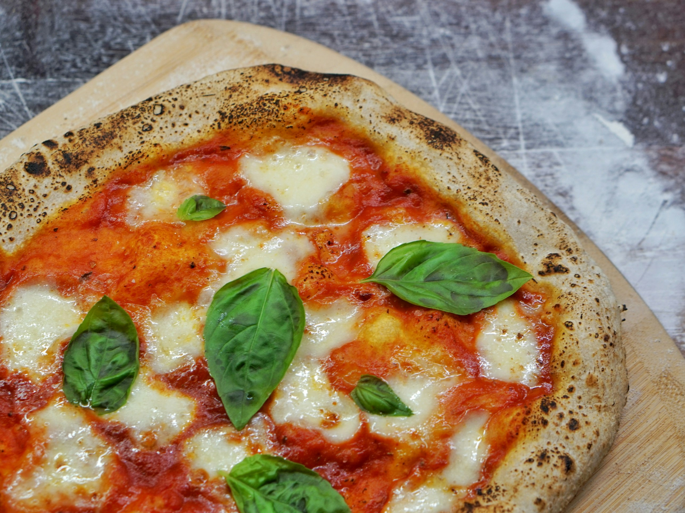

Pizza Margherita – Neapolitan Style

Ingredients
- 2 9-oz. balls Master Pizza Dough
- All-purpose flour, for work surface
- 4 tablespoons crushed tomatoes, divided
- 2 tablespoons olive oil, divided
- 4 ounces fresh mozzarella cheese, thinly sliced, divided
- Fresh basil leaves, for serving
Directions:
- Place dough balls on a baking sheet; cover with plastic wrap. Let rest at room temperature for at least 45 minutes and up to 2 hours. (This will make it easier to stretch.)
- Preheat oven to 525°F with racks in uppermost and lowest positions. Lightly flour a work surface. Place 1 dough ball on surface (leave second ball covered); turn to coat in flour. Press firmly with fingertips and palm to flatten to an 8-inch round, starting from the center and working toward the edge. With hands at 10 and 2 o’clock, lift dough and rotate, moving hands around the edge, letting dough stretch to a 10-inch round. Transfer to a baking sheet.
- Spread 2 tablespoons crushed tomatoes over dough, leaving a 1-inch border. Drizzle with 1 tablespoon oil and top with half the cheese.
- Bake on lower rack until bottom of crust is browned (use a spatula to peek underneath), 7 to 9 minutes. Transfer to top rack; increase oven temperature to broil. Watching closely, broil until crust is lightly charred, 2 to 3 minutes. Remove from oven; top with basil.
- Repeat with remaining dough and toppings.
Go Back